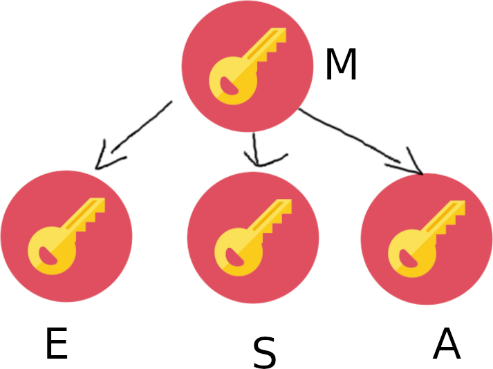
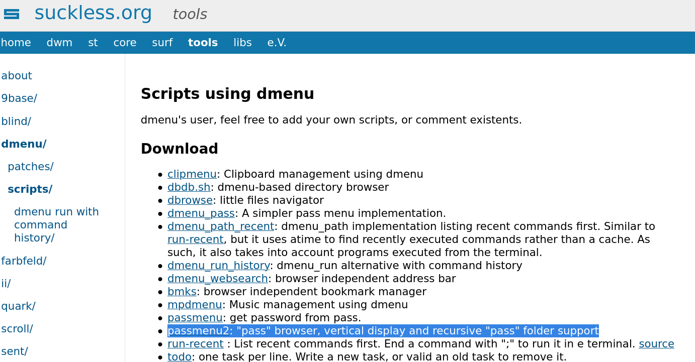
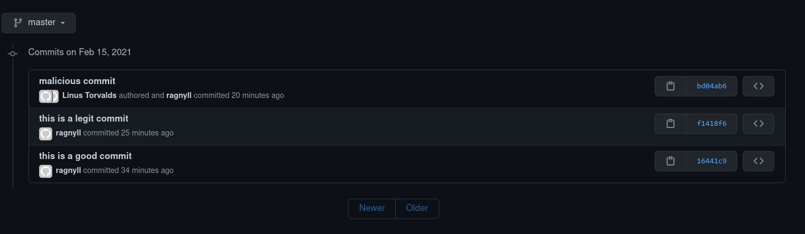
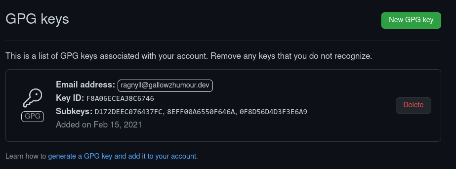
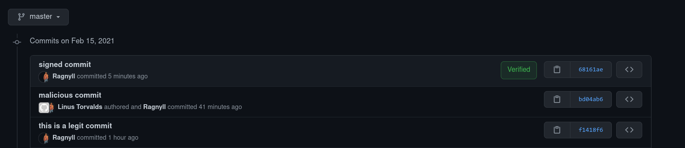
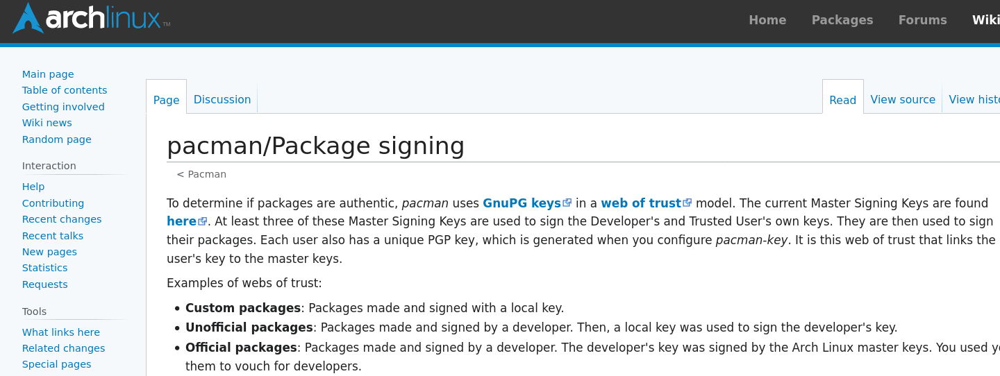
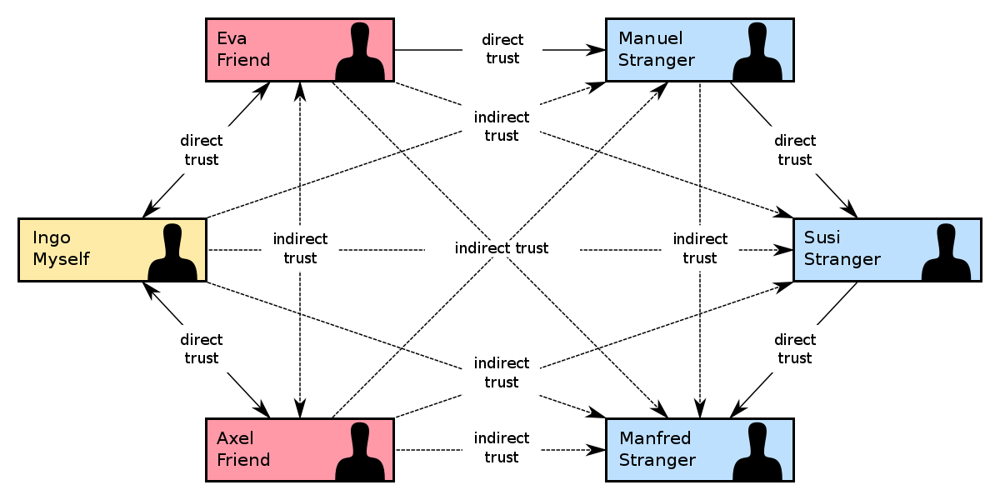
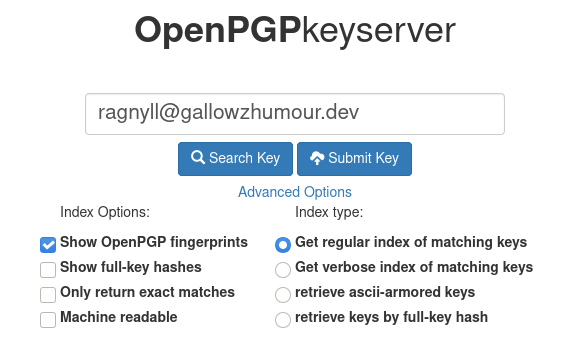

Everyday PGP
A pretty good presentation by Jake Gallow
Definitions
Check out the website
PGP Design

Key Generation
What's Wrong With This?
- We're using 1 key for everything
- The Key doesnt expire
- Our computer may already be compromised
Generating Multiple Keys
Use a Security Key
Avoiding Initial Compromise
Let's Encrypt some stuff
DANGER!
Some Useful Utilities
|

|
Unix pass
dmenu + pass
Unix Pass... on the phone

random_scripts

Digital Signatures
A Problem
On Github
What is signing?
Signing Commits
On Github
On Github
Signing other stuff
Package Managers
A huge assumption
Web of Trust
Sharing Keys
The Best Resources
Side note... I Used